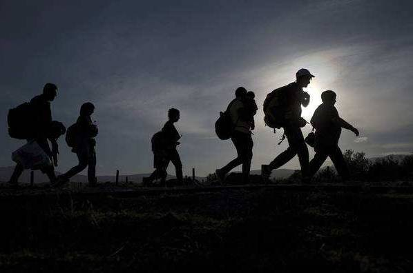
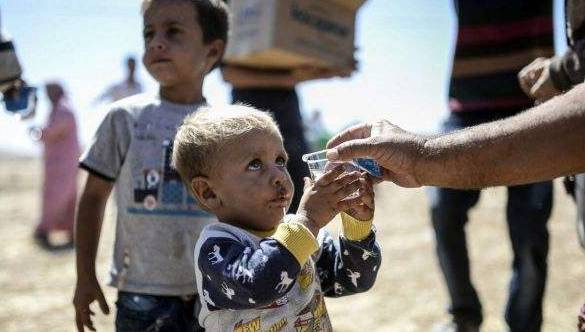
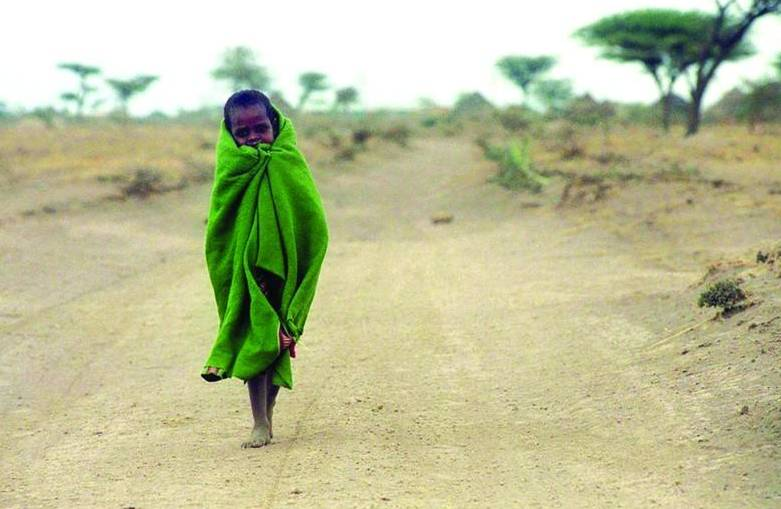

收录于合集
学人简介：
史小今，中共中央党校报刊社编辑室副主任
本文来源： 《国际论坛》2017年第1期
获取方式： 后台（聊天页面）回复“ 国际论坛 ”自动获取
摘要
目前， 难民问题在世界范围内长久得不到解决， 主要是因为其面临着人道主义和国家安全的两难困境。从国际关系理论中的现实主义观点来看， 维护国家安全是国家的首要任务， 这就要求国家必须控制进入本国领土的人口； 而从理想主义观点来看，人的基本权利应该优于任何国家利益的政治考虑。这两种观点构成了难民问题研究和难民政策制定两个截然相反的理论基础。理清这个问题， 有助于我们观察各国难民接收政策的逻辑， 并对我国的难民政策制定有所借鉴。
关键词： 难民； 理想主义； 现实主义； 难民政策
２０１６年６月，联合国难民署（ＵＮＨＣＲ）发布《２０１５年全球难民趋势》的报告，报告指出，由于部分国家和地区常年持续动荡和冲突加剧，近年来国际难民形势明显加剧。自２０１１年到２０１４年间，全球范围内能够统计得到的流离失所人数增加了４１％，超过６０００万。这一数据已经达到了二战后的最高点。截至２０１５年底，全球有６５３０万人被迫流离失所，创下历史新高，〔１〕已经超过了英国、法国、意大利国家的人口总数，以地球上７３．４９亿的人口作为衡量尺度，意味着全球每１１３人中，就有１人是流离失所者、寻求庇护者或者难民。难民危机引起世界各主要国家密切关注，也引发了全球范围内对处理难民问题和难民政策的讨论。

一、 难民定义及世界主要难民问题应对方式 ****
1
难民的定义
目前， 对于难民的定义， 学界和政府机构通常采用联合国１９５１年７月签订于日内瓦的《 关于难民地位的公约》 对难民的定义，指“ 现居住在原籍国或惯常居住国之外的地方； 因种族、 宗教、 国籍、 隶属于某一特定社会集团或政见关系， 有确凿理由害怕遭到迫害； 不能或者因为惧怕迫害而不愿接受原居留国的保护， 或返回到那里、 需要寻求国际保护的人。” 由此定义可以看出， 联合国的难民定义主要偏重于政治难民。很明显，仅着眼于政治难民的定义十分局限。因此， 随着难民数量的增大和流动加快， 难民的定义有了新的发展， 一些区域性的国际组织根据难民救助的经验和需要对“ 公约难民” 定义加以补充， 如 １９６９ 年《 非统组织关于非洲难民问题特定方面的公约》 和 １９８４ 年《 卡塔赫纳宣言》 规定：“‘ 难民’ 一词也适用于凡由于外来侵略、 占领、 外国统治或严重扰乱其原住国或国籍所属国的一部分或全部领土上的公共秩序的事件， 而被迫离开其常住地到其原住国家或国籍所属国以外的另一地去避难的人。”这等于在难民定义中添加了冲突难民的分类， 大大扩展了难民的范围。
随着世界部分地区冲突的加剧、环境气候变化的影响、经济发展不平衡问题的出现，难民的种类更加多样化，对难民定义的探讨就更加多元。２０世纪７０年代开始，环境难民的概念逐渐被联合国环保署和联合国难民署关注。１９８５年，卡布莱布?菲尔斯（ＫｉｂｒｅａｂＧ．Ｆｅｒｒｉｓ）将环境难民定义为：由于显著的环境破坏（天灾或者人祸）有碍人类生存或（并）严重影响生活品质，被迫暂时或永远搬离其原来居处的人。〔３〕由于环境的构成要素的多样性，环境难民的概念还衍生出了很多相关概念，生态难民、气候难民、海洋难民等，环境难民成为学术界十分关心的话题。此外，建勋还提出了经济难民的概念。他认为，经济难民主要是指近年来受经济全球化的影响而出现的全球大规模的人口迁徙现象，在这些人口中包括经济移民和经济难民，其中劳工和贫困人口就属于经济难民。也有一些学者开始研究难民与移民的区别。莉迪亚?史密斯（ＬｙｄｉａＳｍｉｔｈ）指出了移民、难民和申请避难者几个定义的区别。她指出，移民主要是“长期或者短期迁往国外某一地区永久定居的人。”这些人主要是为了寻求更好的生活———通常被称为经济移民，也有一部分移民是为了家庭或者求学。那些因为冲突、政治迫害等而迁移到其他地区或者国家的人口通常被称为难民。
２
导致难民出现的原因
目前，各国处理难民问题主要有三种方式：遣返、救济和重新安置。其中，“遣返”是最简单而传统的方式。很多国家会通过设置“安全国”等方式直接将申请避难者遣返回本国。但是出于人道主义考量，联合国难民公约规定，如果难民在其原居住国有可能会受到迫害，则申请避难国不得将难民强行遣返。因此，这种方式目前很难实行。对于难民群体来说，对于改善他们境况最有利的方式是“重新安置”。通过难民接收程序被接收国重新安置在本国生活，获得新的安身之地。但这种方式却会对安置国产生不小的社会负担和经济负担，安置国政府必须通过国家财政支出为难民提供衣食住行、医疗、教育、就业培训等一系列支持。由于语言、文化等各方面差异，难民完全融入安置国是一个漫长的过程，很有可能长期影响安置国家的社会稳定和民族关系。例如，叙利亚难民危机爆发初期，德国秉持人道主义原则，一直实施着较为宽松的难民接收政策，并因此赢得了一定的国际声誉。但是大量接收难民的负面后果很快显现出来：社会矛盾急剧增加，社会治安恶化，反难民呼声不断，民粹主义政党德国选择党（ＡＦＤ，ＡｌｔｅｒｎａｔｉｖｅｆｕｒＤｅｕｔｓｃｈｌａｎｄ）兴起，并以反难民和移民为口号，威胁执政党地位。２０１６年９月２０日，德国总理默克尔领导的基督教民主联盟在德国首都柏林举行的州议会选举中遭遇重挫，而选择党则首次进入柏林州议会。因此，目前绝大多数国家都避免采用重新安置的办法，而是更多采用提供救济的手段。通过提供资金、衣物、食品、药品等给难民以生活上的照顾。国际上各国往往希望别的国家安置难民，自己只提供救济，这样既表达了自己的人道主义关切之情，又不会使自己背上长期的包袱。例如，日本一直是联合国难民救济计划的最大资金捐助国，但它的一贯政策是不接收难民。但这种办法仅仅能暂时缓解难民的生活困境，无法根本解决难民问题。
不同于在自愿基础上产生的移民现象，难民（包括寻求避难者）问题的出现，主要源于国际人权意识的兴起和公众对国家与公民关系的自由共和主义的理解。自由共和主义，形成于２００６年，代表作为《自由共和主义新篇》。该主义以研究资本主义、社会主义和自由主义的理论为基础，形成了以人民民主、自由权利、公益社会、经济开放、政治透明和自由共和主义执政理论为中心，崇尚自由民主和谐，政治执政权与监督权分立，提倡三权两政分立的思想，使社会成为公益的自由民主社会。不容否认的是，“国家”是难民问题的起因和解决方案。一方面，难民被定义为基本人权受到侵犯，并且失去了原属国保护的个人；另一方面，这种原属国保护的丧失意味着这一群体需要寻求国际社会的救助，即其他国家通过为难民提供庇护，使难民群体基本权利获得保障。然而，由于国家有承认或者拒绝非国民进入和停留在其领土上的权利，因此，采用宽松的还是严苛的难民政策关系到国家主权的核心问题：国家安全问题。
目前，各国的难民政策普遍置于两个相互冲突的范式之间：一方面，对基于国际人权的人道主义原则的承诺———这反映在哲学领域即为理想主义思想，人权的普遍性，适用于每一个体，不论他们来自哪一国家———要求各国尽可能多地接收难民，维护难民的生存和发展以及接受救助的权利；另一方面，出于现实主义考量的维护国家内部安全的当务之急———国家主权的特殊性，支持国家控制外国人在其领土上进入和停留的权利———则要求各国尽可能控制进入本口的外国人口，以维护本国的国家安全。因此，各国的难民政策普遍试图在这两者之间求得平衡。
３
处理难民问题的主要方式
目前，各国处理难民问题主要有三种方式：遣返、救济和重新安置。其中，“遣返”是最简单而传统的方式。很多国家会通过设置“安全国”等方式直接将申请避难者遣返回本国。但是出于人道主义考量，联合国难民公约规定，如果难民在其原居住国有可能会受到迫害，则申请避难国不得将难民强行遣返。因此，这种方式目前很难实行。对于难民群体来说，对于改善他们境况最有利的方式是“重新安置”。通过难民接收程序被接收国重新安置在本国生活，获得新的安身之地。但这种方式却会对安置国产生不小的社会负担和经济负担，安置国政府必须通过国家财政支出为难民提供衣食住行、医疗、教育、就业培训等一系列支持。由于语言、文化等各方面差异，难民完全融入安置国是一个漫长的过程，很有可能长期影响安置国家的社会稳定和民族关系。例如，叙利亚难民危机爆发初期，德国秉持人道主义原则，一直实施着较为宽松的难民接收政策，并因此赢得了一定的国际声誉。但是大量接收难民的负面后果很快显现出来：社会矛盾急剧增加，社会治安恶化，反难民呼声不断，民粹主义政党德国选择党（ＡＦＤ，ＡｌｔｅｒｎａｔｉｖｅｆｕｒＤｅｕｔｓｃｈｌａｎｄ）兴起，并以反难民和移民为口号，威胁执政党地位。２０１６年９月２０日，德国总理默克尔领导的基督教民主联盟在德国首都柏林举行的州议会选举中遭遇重挫，而选择党则首次进入柏林州议会。因此，目前绝大多数国家都避免采用重新安置的办法，而是更多采用提供救济的手段。通过提供资金、衣物、食品、药品等给难民以生活上的照顾。国际上各国往往希望别的国家安置难民，自己只提供救济，这样既表达了自己的人道主义关切之情，又不会使自己背上长期的包袱。例如，日本一直是联合国难民救济计划的最大资金捐助国，但它的一贯政策是不接收难民。但这种办法仅仅能暂时缓解难民的生活困境，无法根本解决难民问题。

二、 从国际关系理论中的两种范式视角看难民问题
如前所述，难民政策表现为人权原则与国家主权原则之间的内在矛盾。因此，难民和难民保护的概念存在争议，其观念和定义往往在更多遵循集权主义还是更多人道主义之间徘徊。这种对立，源于国际关系理论中两个主要的经典理论传统，即现实主义和理想主义。虽然在国际关系理论中，这两种范式各自产生了不同的方法，但他们的哲学基础可以在一组核心假设中得到确认，就它们的人权与国家主权的关系概念而言，这些假设本质上是相反的。从难民的某些规范取向来看，现实主义和理想主义的观点之间存在着不同的认知和规范意义的例证（通常是隐含的）。对这些不同规范取向的识别，有助于更好地分析难民问题，并且在政策变迁的实证研究中提供有用的分析范畴和更有效的难民问题的解决方案。
1
** 现实主义观点： 国家的主要职责**
根据现实主义理论， 国际体系中的关键因素是主权国家。主权体现在内在和外在两个范畴。其中内在范畴是指在国内国家的最高权力， 即在特定区域内制定和执行法律的权力。这一权威得以建立的基础在于人民和国家之间的社会契约理念： 国家能够保证人民的安全。因此， 维护国家的内部安全是国家的首要任务。国家领导人被视为完全理性的人， 其行为是为了保护“ 国家利益”。 由此衍生出一种观点， 即在任何时期， 人权和其他价值观都应该服从于维护内部秩序乃至国家安全。外在范畴则是指在国际领域， 一个国家对其领土有绝对的独占控制权， 任何外部权力都不能干涉国家的内部事务。而国际体系的特点是无政府状态。现实主义认为， 当丧失公共权力时， 国际体系不受规范或共同原则的控制， 同样的， 每一个国家都对其治下的人口和领土乃至社会价值享有完全的自治权。
这种现实主义理论下的无政府主义思想产生了现实主义另外的两个关键概念： 理性与自助。首先， 理性的概念是指在国际体系中， 国家的功利行为被看作是权力最大的崇拜者。在无政府状态下， 他们的关系被看作是一个完全分配的零和博弈， 即一国得到的利益等于另一国损失的利益。因此， 国家在竞争逻辑下， 根据人口与地域规模、 资源禀赋、 经济能力、 军事实力、 政治稳定、 国家竞争力等情况采取行动， 并且寻求权力最大化。这种竞争逻辑与根据共同规范或原则达成的。
这种现实主义理论下的无政府主义思想产生了现实主义另外的两个关键概念：理性与自助。首先，理性的概念是指在国际体系中，国家的功利行为被看作是权力最大的崇拜者。在无政府状态下，他们的关系被看作是一个完全分配的零和博弈，即一国得到的利益等于另一国损失的利益。因此，国家在竞争逻辑下，根据人口与地域规模、资源禀赋、经济能力、军事实力、政治稳定、国家竞争力等情况采取行动，并且寻求权力最大化。这种竞争逻辑与根据共同规范或原则达成的协议是矛盾的，除对其他国家的内部事务不干涉规则外。因此，当现实主义者在外交政策中考虑到理念与价值的追求时，这被解释为权力政治的一部分；“普遍”规范的概念仅仅是对适用于霸权国家的规范的一种反思。并且，外交政策中的人权追求被看作是一个国家在另一个国家的道德原则（伦理）的实施。
无政府状态的第二个相互关联的概念是自助。在国际关系中， 国家只能通过自助实现自己的安全。这就意味着每一个国家都有追求其外交政策的权利， 因为其认为这样做是适合的。因而， 现实主义理论主要关注的是“ 高级政治” 问题， 例如战争、 和平。经济或其他目标服从于整体的国家生存利益， 而观念、 规范或价值观对国际关系不会产生影响。从这个角度来看， 难民问题依赖于国家主权， 包括对其领土和人口的控制。对于现实主义者来说， 如果一个国家不能理性地控制移民人口的流动， 移居外国和移民入境都将成为一个安全威胁。从现实主义的角度来看， 不受控制的移民不仅破坏了一个国家在自有领土上的主权， 并且会威胁其社会经济和政治结构。因此， 大规模的难民流动可能会严重影响流出和流入国之间的关系， 并且最终对和平构成威胁。
2
理想主义观点：个人的首要任务
国际关系中的自由主义思潮起源于１６世纪初的各种哲学和神学写作，之后，自由主义标签已被用于各种研究和场合，根据自由主义思想中的康德传统，本文讨论的重点是其中的“理想主义”标签。
根据康德的思想，国际体系分析中的核心单元不是国家，个人被看作是一个普遍的“人类社会”中的一部分。根据这种观点，国家只履行保障其人民权利的最低限度的作用；主权不是国家，而是个人。国家的目的并不是为了追求具体的国家利益，而是促进普世价值的实现。在“世界公民观念之下的普遍历史观念”下，康德提出了国家制度的一个重大的结构性改革，即通过引入一个集中的权力，负责确定和执行超越国家本身之上的法律。这将防止独立主权操纵个人权利，并且允许通过“一个联合权力与统一法律管辖的决定”来捍卫这种普世规范。因此，合作成为国际关系中的主导原则。人类不仅形成了一个权利共同体，而且还对保护这些权利负有共同的责任。康德提出的“普遍好客”原则（ＵｎｉｖｅｒｓａｌＲｉｇｈｔｏｆＨｏｓｐｉｔａｌｉｔｙ）认为，“地球是人类共有的财产，本来就没有任何人比别人有更多的权利可以在地球上的一块地方生存……限制别人来到自己主权的领土之上也不符合国际社会的契约。”虽然康德承认，陌生人并不拥有在另一个国家定居的权利，但他们有权接受款待以及不应该被拒之门外，或者被强制回到他们生命将受到威胁的地方。从这个角度来看，道德原则先于政治考虑：“人的权利必须是神圣的，然而，对于掌权者来说，可能必须作出伟大的牺牲。”
由此可见，如果从理想主义者的角度界定难民概念，这一概念将与现实主义的概念存在很大不同。理想主义者认为，难民指的是这样一类人，即他们的基本权利受到了侵犯并且需要保护。这种观点下的人权侵犯不是国家主权问题，但却是国际社会共同关注的问题。因为人权是所有人类共有的，无论他们属于哪个国家，哪种文化或群体，对他们的保护是共同的大众利益诉求，以及和平实现的条件。因此，保护人权是国际社会共同的责任。
根据这种人道主义相互依赖的概念，可以得出两个结论。第一，国际社会有责任防止人权的侵犯和难民的产生。为此，各国应当通力合作，包括经济合作，并且，如果必要的话，进行人道主义干预，从而消除产生难民的根本原因；第二，国际社会应当担负起为难民提供保护的共同责任。这一责任限制了国家在其人口组成及进入其领土之上的自由裁量权。从这个角度来看，个人的基本权利优于任何关于国家利益的政治考虑；也就是说，对他们的保护必须是神圣的。据此可以说，难民不是权力政治或竞争问题，而是全人类应该共同关心的问题，这就要求国家和个人之间的合作和团结。
由上可见，从现实主义和理想主义两个视角出发，将难民保护和难民政策描述成为一个国家主权和人权的问题，虽然都是以抽象的方式提出来，但这两种观点都是基于当代关于难民问题的辩论，构成了难民问题研究和难民保护及难民政策制定的两个极端，世界各国的难民接收政策也就不可避免地被置于这两个极端之间。

三、 各国难民政策发展趋势
由上文论述可见，在世界各国具体的实践中，我们没办法具体判定一个国家的难民政策究竟是好的还是不好的，在两个相互矛盾的极端标准之间，很难单纯以“好与不好”、“正义与非正义”的标准来判定一国的难民接收政策。因为，从维护一国国内安全角度出发的从国际关系理论中的两种范式视角看难民问题两难困境限制性难民保护政策在另一国家来看，往往是不符合人权和人道主义原则的；而反之亦然，符合别国或者国际视野的人权和人道主义原则的开放和宽容的人道主义政策往往会对国家安全造成威胁。从世界各主要难民接收国的难民政策演变来看，各国的难民政策虽然有变迁，在两个极端当中也常有摇摆，但是往往还是遵循一定的逻辑的：第一，该国的难民政策制定往往首先服务和服从于国家利益；第二，难民接收国制定难民政策主要遵循人道主义和国家安全两个原则，这两个原则之间存在负相关关系；第三，未来相当一段时期内，世界各主要难民接收国家都将更加重视国家安全需要，采用并制定更加严苛的难民政策，使其服务于国家安全的需要；第四，未来，国际社会应该探索新的解决难民问题的方式。
1
难民政策制定首先服务和服从于国家利益
国家利益就是满足或能够满足国家以生存发展为基础的各方面需要并且对国家在整体上具有好处的事物。现实主义代表摩根索曾对国家利益的概念提出明确的定义， 他说， 国家利益应当包括三个重要的方面：领土完整、 国家主权和文化完整。他认为， 在这三个方面中， 最本质的问题就是一个国家的生存问题， 其余方面都是次要的问题。
从世界各主要难民接收国家的难民政策演变历程可以看出， 即使是从人道主义角度出发采取了相对宽容的难民接收政策的国家， 也往往是平衡了国家利益的考虑， 认为宽容的难民接收政策更有助于国家利益的实现。例如， 叙利亚战争后， 在难民接收中表现最突出的德国， 二战之后一直都倾向于采用宽松的难民政策。其主要目的在于， 洗涤二战给德国留下的负面国际影响， 通过接收难民， 重塑德国“ 人道主义” 国家的国际形象， 在努力从战争创伤中复原、 重振国家经济的同时重新获得欧洲乃至世界各国的认可。这一努力确实也让德国达到了目的。自２ １世纪以来， 德国一方面在经济上逐渐占据了欧洲最强国之席； 另一方面又通过大量接收难民扛起了“ 欧洲人道主义” 大旗， 加强了自身话语权， 并从政治经济各个领域塑造出了其欧盟领头羊的形象。
再如早期的英国在难民政策上也强调人权保护，坚持自由开放， 甚至一度在难民救援和安置上发挥了主要作用， 符合人道主义精神。其主要原因是， 其从最早的工业革命国家起家， 一度成为世界上最发达的老牌资本主义国家， 对劳动力的需求促使其采用宽松的难民政策。甚至在德国“ 水晶之夜” 后， 发起过一次举世瞩目的犹太儿童难民接收行动， 营救了上万名犹太儿童， 感动了世界。但是在行动展开期间， 英国政府却对儿童的挑选十分严格， 与其说是一场营救， 不如说是一次选择性的移民， 主要吸收了有利于本国经济发展的、 价值观相对稳定的儿童进入本国。 直到经济衰退后， 英国才开始逐步采用限制的难民政策。
再如战后的美国， 一直坚持开放的难民政策， 在全世界打造“ 美国梦” 的国家形象， 吸引了大批人才到美国， 奠定了美国成为世界霸主的人才基础。二战后到冷战结束后， 美国仍然接收了大量难民。然而， 虽然美国难民政策名义上是从人道主义精神出发对难民提供庇护和救助， 但是其本质还是与意识形态不可分割。制定难民政策的核心实际上是为什么样的人打开美国大门的问题。冷战期间， 美国的难民政策的核心是为反对共产主义意识形态而服务的。利用难民的象征作用， 通过接收来自共产主义阵营国家的难民来宣传本国价值观， 打击共产主义， 是美国制定难民政策的核心考量。
由此可见， 各国的难民政策制定都首先服务和服从于国家利益。
２
难民政策制定的两个原则及其负相关关系
难民接收国制定难民政策主要遵循两个原则：人道主义原则和国家安全原则。这两个原则之间存在负相关关系。更多考虑人道主义原则，就会在一定程度上放弃维护国家安全的考量，采用宽松的难民政策，更多考虑国家安全原则，采用严苛的难民政策，将更多难民拒之门外，则无法兼顾人道主义。而目前的趋势是，往往一个国家在本国国内采用更加严格的难民政策，却希望其他国家更多承担接收难民的责任。
比如人道主义下的德国难民政策所引发的国家安全问题，确实存在且不应忽视。根据德国伊弗经济研究所提供的数据，２０１５年德国政府难民接收费用达到了２２６亿美元。高额的难民支出不仅使政府负担沉重，还引起了德国民众的不满。然而，经济问题仅是其中之一，更多的政治社会问题如中产阶级“排外”情绪膨胀，极右翼势力扩张；文化融合进程缓慢，多元文化冲突严重；政治生态分裂，左右翼对峙激化等已成为德国国家安全的隐患。
而“９?１１”之后的美国却正好相反，在本土遭受恐怖袭击后，美国将国内安全置于首位，并制定了严苛的难民接收政策。叙利亚难民危机２０１１年爆发以来，至２０１５年底，美国才总共接收了１５００名难民，为此遭到国际社会强烈谴责。在国际社会（其欧洲盟友）和国内社会（人权观察组织）的双重压力下，美国政府才勉强宣布２０１６年接受１万名叙利亚难民。然而巴黎惨案发生后，美国有一半州长宣布拒绝接收难民。美国一直以保护美国人的安全为由，拒绝接纳更多的难民，但是这种只注重本国国家利益而放弃人道主义关切的做法，恰恰违背了人权普适原则。与此同时，美国却一直呼吁其他国家努力解决难民问题，“解决这一问题需要更加广泛的全球合作”，“我们应当履行我们的义务，欧洲人也应当履行他们的义务，但是有一点必须明确，这是一个更加广泛的全球性危机。
３
当前难民政策趋势： 世界各国将采取更加严苛的难民政策
当今世界， 虽然总体安全形势趋于稳定， 意识形态对抗弱化， 经济交流合作为国际交流的主流， 尚无爆发大规模冲突的可能， 但是由于民族、 宗教、 领土、 资源等因素引发的各种武装冲突和局部战争此起彼伏。各种分裂势力、 恐怖势力和极端势力给国际社会造成重大威胁， 使各国的安全形势都处于不容乐观的状态。加之传统安全因素与非传统安全因素相互交织， 使得世界各国维护其各自的国家安全面临的不确定因素大为增加， 难度也随之加大。
尤其是冷战结束后， 国际安全环境出现了一些新的变化， 除一些传统意义上的安全因素（ 如军事结盟、地缘争夺、 军备竞赛、 武器扩散等） 在继续对国际安全形势产生重要影响外， 一些新的非传统安全因素如国际恐怖主义、 民族分离主义、 宗教极端主义等引发的动荡、 冲突甚至战争， 一波未平一波又起， 给新世纪的国际安全增加了新的不确定因素。２ ０１５年以来美国和欧洲几起本土恐怖袭击案件表明， 国家安全不但有可能会受到外部力量的威胁， 还有可能受到来自本国内部力量的威胁。尤其是２ ０１３ 年美国波士顿暴力恐怖事件、 ２ ０１４ 年 １０ 月加拿大首都渥太华恐怖袭击事件，２ ０１５年法国《 查理周刊》 遇袭案、 ２ ０１６年美国德州枪击案， 这些本土恐怖主义袭击案中， 恐怖主义分子要么是通过难民身份进入这些国家， 要么是在本国出生并长大的移民或者难民的后代， 甚至还有受极端思想影响的这些国家土生土长的公民。这些都让各国的国家安全面临困境， 从现实主义角度出发， 国家通过控制本国人口维护国家安全的任务更加紧迫。
此外， 还有接收难民国家经济所遭受的影响， 不同文明之间的冲突加剧， 民粹主义兴起等原因， 都促使各国政府将本国的难民接收政策予以收紧。从具体实践中， 我们也不难看出这一趋势。
４
探索新的难民解决方式
目前，各国处理难民问题主要有三种方式：遣返、救济和重新安置。从当前难民问题解决的情况来看，这三种方式都很难很好解决难民问题，因此需要探索新的难民问题解决方式。目前，国际社会和学界普遍探讨的是从全球治理的角度，解决难民产生的源头，消除战争、饥饿，贫穷，政治迫害等。但是这些视角还是相对空洞。笔者认为，还应该有一些新的解决难民问题的视角，如抛弃传统的、保守难民救助体系，建立新的难民救助体系。
随着全球性的难民人数越来越多，各国政府接收和救助难民的意愿逐渐下降。现有的难民救助体系已经不能满足需要。现有的救助体系将难民救助问题看作是一个人道主义问题。当人们背井离乡、穿越国境、到达接收国，接受国政府惯常的做法，是为难民们提供衣食住行，满足其基本的生活需要。但是这种做法只适合于满足应急性的需求，长期来看，这会导致依赖情绪。
目前，超过一半的难民处于超过五年的“滞留”状态。这些难民的平均“被流放”时间超过１７年。绝大多数难民被安置在难民营中，没有工作权和自由流动的权利。很多安置国家边境紧闭，国际捐助者并不愿意捐助在难民营中的大量的难民，难民一旦踏上寻求保护的道路，则危险重重。
在这种环境下，应该重新考虑难民的救助体系。目前的保守安置政策不可持续。这种安置政策忽略了难民自身的技能、才华和热情。大多数难民有能力，他们大多数并不愿意成为安置国的负担，而有潜力为安置国的经济发展贡献自己的力量。从世界范围看，即使在最严酷的环境下，在难民营或者乡村地区生活的难民也有能力参与经济活动，为自身和其他人，创造机会。
联合国难民署长期呼吁难民安置国转变难民救助工作模式，倡导发挥难民的主观能动性和创造力，鼓励难民群体融入安置国的劳动力市场当中，彻底转变单纯提供生活必需品的难民安置方式。但是这样的倡议长期得不到推行。为了更好地使难民自身成长变成现实，应该更好地理解难民们的经济生活。可以从建立难民经济着手，从市场手段出发，抛弃单纯的依赖性?３２?从国际关系理论中的两种范式视角看难民问题两难困境的、保守的难民政策，探索新的难民救助体系。
综上所述，一国的难民政策关系到国家利益的实现，受人道主义原则和国家安全原则的双重制约。目前各国的难民政策的主要趋势还是收紧以维护国家安全需要。把握这些原则，有助于我们分析我国面临的难民问题，制定出有利于我国国家利益的难民政策。
声 明
国政学人微信公众平台系非盈利学术平台。文章出自最新的南大CSSCI和北大中文核心来源期刊。目的是方便广大学人进行学术研究，促进学术的传播和交流，不做任何商业用途。如有任何权利问题，请直接与我们联系。